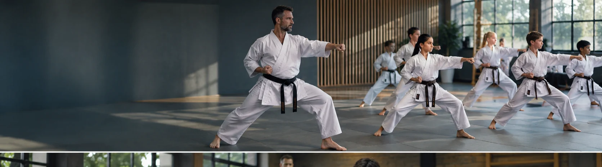
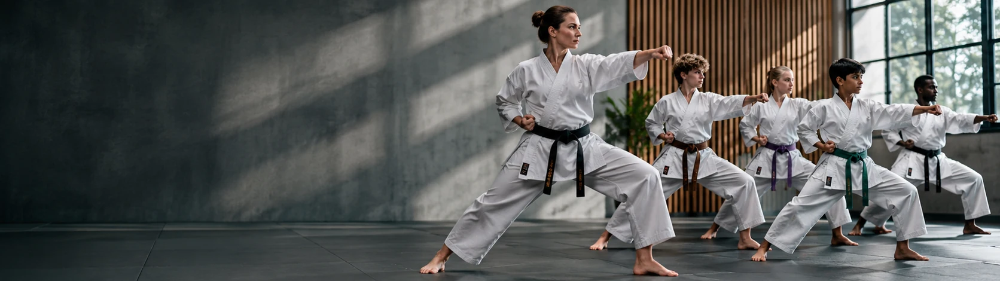
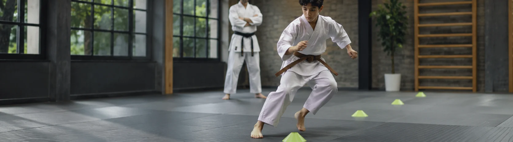
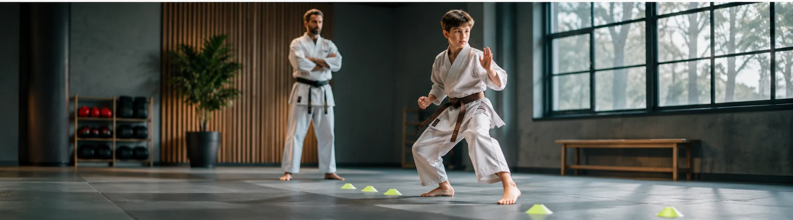

01 ↗
Run your school.
Move student records, fees, attendance, timetables and follow-ups out of disconnected spreadsheets.
ACADEMY OPERATIONSRun a modern karate school with one connected workspace for fees, attendance, belt grading, events, guided training and student-family engagement.

01 / THE PLATFORM
Focus on the mat, not the paperwork. Keep everyone working from the same secure, authorised academy records—from the first enquiry through long-term progression.
Move student records, fees, attendance, timetables and follow-ups out of disconnected spreadsheets.
ACADEMY OPERATIONSKeep belt grading, progress reports, instructor feedback and guided drills connected to every student.
PURPOSEFUL TRAININGGive parents the visibility they need without exposing private academy or student information.
STUDENT & FAMILY EXPERIENCE02 / MADE FOR YOUR AMBITION
Whether you're teaching your first class or overseeing several dojos, your operating system should grow with you—not hold you back.

Less paperwork. More time on the mat. Keep student records, attendance, fees and belt grading organised.
Discover your workflow ↗
Coordinate instructors, batches, training calendars and parents with a single source of truth.
Discover your workflow ↗Oversee multiple locations without losing centre-level control over instructors and student information.
Discover your workflow ↗03 / CONNECTED WORKFLOWS
Real academy tasks, not another collection of tabs. The integrated demonstration brings the core workflows together.
One academy-scoped record, guardian links, enrolments and role-appropriate access.
THE FOUNDATIONTrack monthly fees, one-time charges, partial payments and manually verified transactions.
FINANCEStay ahead of absences, follow-ups, missed classes and preventable drop-outs.
PARTICIPATIONTrack belt grading, tournaments, certificates, skill reviews and student milestones.
DEVELOPMENTManage reservations, participation, guardian consent and event commitment tokens.
ACADEMY EXPERIENCESManage multiple branches, teaching teams and tailored role permissions.
GROWTH04 / GUIDED PRACTICE · F11
Give every student a purpose when they step onto the mat—or practise at home. Planned drills, clear goals and instructor review replace unstructured extra practice.

01 / ACADEMY PRACTICEMake every extra session count with instructor-assigned drills, sets, repetitions and reviewed technique.

02 / HOME PRACTICEGive students safe, age-appropriate practice plans for home, supported by clear instructions and instructor feedback.
05 / THE PRODUCT EXPERIENCE
Move effortlessly from an academy overview into attendance, collections, student progress and guided practice—without duplicating student records.
06 / THE FOUNDING PROGRAMME
We're inviting up to ten founding masters and academies to help refine the product before broader commercial launch.
Apply for a founding place ↗Early involvement in actual workflows
Direct product feedback and prioritisation
Consideration for a private pilot after safety checks
No payment to apply; acceptance is not automatic
07 / LET'S TALK
Tell us about your karate school. We'll review your request and, if approved, send a private, time-limited invitation to the demonstration.
Access is not automatic. The demo uses fictional records; please don't submit student data or payment information.
Regional-language preview: main content translated; privacy terms, safety instructions and some product descriptions remain in English pending review.
A considered walkthrough for real karate schools.
08 / GOOD TO KNOW
Clear answers before you commit your dojo to a new way of working.
No. The Karate Masters OS demonstration is accessible only after manual approval. An invitation grants time-limited access to fictional data, not to a live customer workspace.
Not yet. We are in integrated beta and private-pilot preparation. Real academy onboarding follows further security, backup, privacy, billing and acceptance checks.
UK organisations may request a demonstration and express interest in the founding pilot. Commercial availability, pricing, data-processing arrangements and country-specific compliance must be confirmed before real use.
The demo has a testable Progressive Web App shell for supported browsers. It still requires internet connectivity for most operations, and production device validation is outstanding.
Yes, the integrated beta includes multi-centre organisations, branch roles and a shared operations view. Independent cross-organisation security testing is required before external production deployment.
No. MastersCorner's public martial-arts platform and Karate Masters OS remain separate experiences. The existing website and its private data stay unchanged.
A NEW STANDARD FOR YOUR DOJO